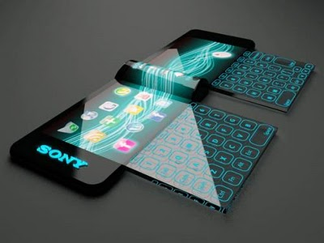

Sociedade, Futuro e a Computação Ubíqua(){
Capa

printf: Uma das primeiras demonstrações de como a computação Ubíqua pode ajudar os usuários no dia-a-dia, foi realizada nos laboratórios da XeroxPARC, onde um dispositivo localizava um usuário dentro do edifício. Que outras aplicações e dispositivos da computação ubíqua você pode citar, que estão presentes diretamente ou indiretamente no dia-a-dia?
Renan: O XeroxPARC realmente foi precursor das pesquisas da área. Lá trabalhavam os cientistas pioneiros que desenvolveram seus principais conceitos, incluindo Mark Weiser, que cunhou o termo “Ubiquitous Computing”. Um uso potencial dessa tecnologia que pode ser facilmente observado hoje, principalmente nos EUA, é na assistência a idosos. Com o aumento da expectativa de vida da população, tecnologias que auxiliem no acompanhamento e na monitoração de idosos são altamente desejáveis nos dias de hoje. Esse é um exemplo clássico da aplicação da Computação Ubíqua (“elderly care”).
printf: Comodidade, facilidade, portabilidade, são algumas das características dos dispositivos ubíquos. Assim como entretenimento, segurança, saúde, ensino são exemplo de áreas que possuem aplicações para Computação Ubíqua. Em sua opinião qual área se encontra mais defasada em relação às outras quando se trata de Computação ubíqua? Qual área está sendo mais visada/promissora?
Renan: Eu daria a mesma resposta para as duas perguntas, na minha opinião a área tanto mais defasada quanto mais promissora é uma só: convergência. A tendência futura, que vai diretamente ao encontro da Computação Ubíqua, é integração de dispositivos e sistemas de modo que se perca a noção de isolamento. Por exemplo, eu estou assistindo um programa na TV da minha sala, saio de casa e me desloco para o carro, o vídeo me acompanha, sendo automativamente transferido para o DVD player do carro. Perde-se a noção de dispositivos isolados, o sistema passa a ser ubíquo (onipresente). Algo na linha do antigo moto da Sun Microsystems: “The network is the computer”. Pesquisas para o desenvolvimento de sistemas que contemplem esse tipo de cenário implicam em grandes desafios que estão sendo tratados por tecnologias como a da ciência de contexto, mesh networks, inteligência artificial, lógica, entre inúmeras outras.
printf: Existem inúmeros projetos na área de Computação Ubíqua, como o The Aware Home Research Initiativee o eClass ambos do Instituto de Tecnologia da Geórgia além do Microsoft EasyLiving da Microsoft Research. Dentre esses projetos, tem algum ao qual você possa descrever com mais detalhes? Que outro(s) projeto(s) você pode acrescentar?
Renan: Realmente existem muitos projetos, e os dois citados são mesmo clássicos. Fica difícil nomear os mais relevantes, mas eu arriscaria mencionar o Projeto Oxygen, do MIT; o Aura, da Carnegie Mellon; o Gaia, da University of Illinois at Urbana-Champaign; e o europeu Equator.
printf: Existe uma grande leva de projetos e conceitos de aplicações relacionadas à dispositivos ubíquos. Mas na prática já podemos afirmar que entramos na Era da Computação Ubíqua? Ou este fenômeno ainda está por vir? Como estará a sociedade nos próximos 30, 50 anos?
Renan: Já estamos vivendos alguns aspectos. Muitos vêem Computação Ubíqua como a terceira era da computação. O próprio Weiser tem um artigo sobre isso: a primeira era seria a era do Mainframe, em que temos 1 computador para N pessoas; a segunda era é da Computação Pessoal, com 1 computador para 1 pessoa; na terceira era vem a Computação Ubíqua, em que a relação se inverte: N computadores para 1 pessoa.
}